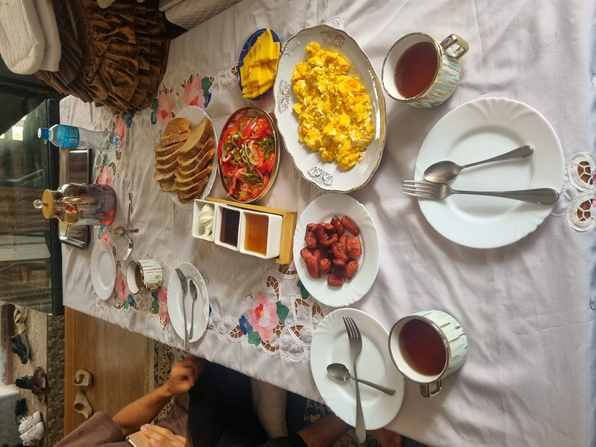
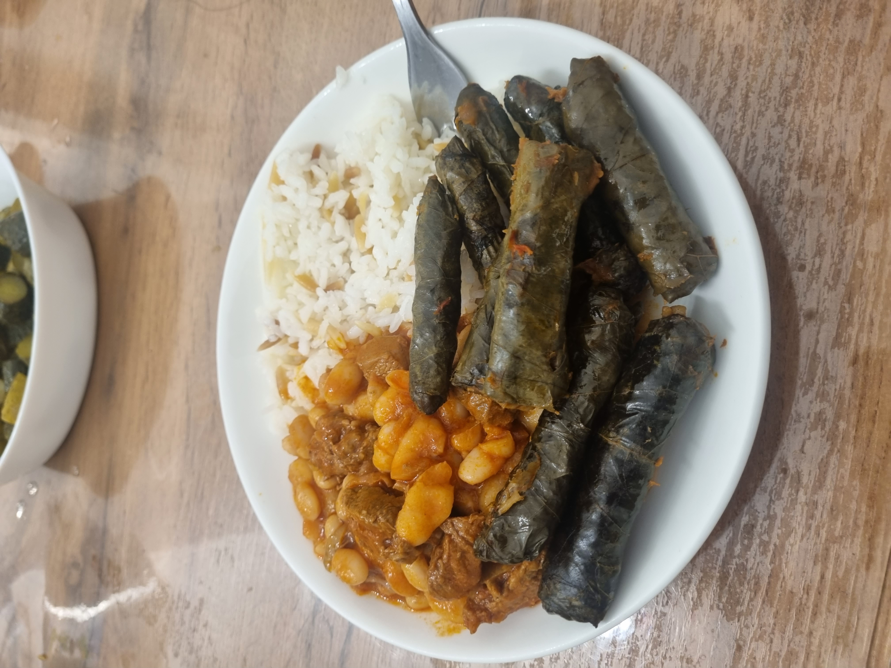

Macronutrients are carbohydrates (carbs), fat, and protein. For healthy adults, the Health and Medicine Division of the National Academy of Sciences in the United States recommends the following balance for your calories:
This is the percentage of calories, not the percentage of each food type in your diet by weight. For example, you might need more grams of protein than grams of fat to get the same number of calories.
- 45-65% from carbohydrates
- 20-35% from fat
- 10-35% from protein
Nutrition
The Importance of nutrition:
Nutrients are essential for bone growth and overall bone health. Proper nutrients can promote HGH (human growth hormone) production and contribute to bone growth.- Fuel for Your Body: Proper nutrition provides the energy and nutrients your body needs to function at its best.
- Supports Fitness Goals: A balanced diet helps you build muscle, increase endurance, and recover effectively.
- Boosts Overall Health: Good nutrition can reduce the risk of chronic diseases like heart disease, diabetes, and obesity.
- Calcium, magnesium, iron, potassium and zinc are beneficial for bone growth.
- Protein: It helps build various tissues, it's good for muscle growth.
- Vitamins: Vitamin D it helps with the absorption of calcium. Other vitamins are also essential, including vitamin A, vitamin B1, vitamin B2, vitamin C, etc.
The Basics of a Healthy Diet, Balancing macronutrients:
Benefits of Tracking Calories and Macros:
- Understanding Your Intake: Tracking can help you identify areas where you may be overeating/undereating.
- Achieving Goals: Whether you're trying to lose weight, gain muscle, or maintain your current weight, tracking can help you stay on track.
- Making Informed Choices: Knowing your daily intake can help you make better food choices.
Building a Balanced Plate:
- Fruits and Vegetables: These are rich in vitamins, minerals, and fiber.
- Whole Grains: Choose whole grains over refined grains for more nutrients.
- Lean Proteins: Sources like chicken, fish, beans, and lentils.
- Healthy Fats: Include sources like avocados, nuts, and seeds.

Sample Meal Plans
Muscle Building
Goal: To build muscle mass while maintaining a healthy body weight.
Focus: Adequate protein intake, balanced macronutrients, and sufficient calories.
Example Meal:
- Breakfast: Oatmeal with protein powder, berries, and nuts
- Lunch: Grilled chicken breast with brown rice and broccoli
- Dinner: Salmon with sweet potato and asparagus
- Snacks: Greek yogurt with fruit, protein shake, or a handful of almonds
Weight Loss
Goal: To lose weight while maintaining muscle mass.
Focus: Caloric deficit, balanced macronutrients, and adequate protein.
Example Meal:
- Breakfast: Scrambled eggs with whole-grain toast and avocado
- Lunch: Salad with grilled chicken or fish, vegetables, and a light dressing
- Dinner: Chicken breast with roasted vegetables and quinoa
- Snacks: Greek yogurt with fruit, apple slices with peanut butter, or a handful of almonds

Healthy Snacking Ideas
- Fresh fruits and vegetables
- Nuts and seeds
- Greek yogurt
- Hard-boiled eggs
- Whole-grain crackers with hummus
Myth Busting:
- Myth: Eating carbs will make you gain weight. Fact: Carbohydrates provide energy and are essential for a balanced diet.
- Myth: Skipping meals will help you lose weight. Fact: Skipping meals can lead to overeating later in the day.
- Myth: All fats are bad for you. Fact: Healthy fats, like unsaturated fats, are essential for good health.